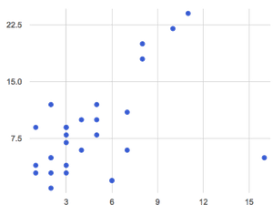

Students investigate scatter plots as a method of visualizing the relationship between two axes, and begin searching for correlations in their dataset.
Students practice making scatter plots using the animals dataset
Students describe correlations in the animals dataset
Students describe correlations in their chosen dataset
Standards and Evidence Statements:
Standards with prefix BS are specific to Bootstrap; others are from the Common Core. Mouse over each standard to see its corresponding evidence statements. Our Standards Document shows which units cover each standard.
8.SP.1-4: The student investigates patterns of association in bivariate data
investigation of patterns of association between two quantities by constructing and interpreting scatter plots for bivariate measurement data
description of patterns such as clustering, outliers, positive or negative association, linear association, and nonlinear association
Data 3.1.1: Use computers to process information, find patterns, and test hypotheses about digitally processed information to gain insight and knowledge. [P4]
Insight and knowledge can be obtained from translating and transforming digitally represented information.
Patterns can emerge when data is transformed using computational tools.
Data 3.1.2: Collaborate when processing information to gain insight and knowledge.
Collaboration is an important part of solving data-driven problems.
Collaboration facilitates solving computational problems by applying multiple perspectives, experiences, and skill sets.
Communication between participants working on data-driven problems gives rise to enhanced insights and knowledge.
Collaboration in developing hypotheses and questions, and in testing hypotheses and answering questions, about data helps participants gain insight and knowledge.
Collaborating face-to-face and using online collaborative tools can facilitate processing information to gain insight and knowledge.
Data 3.1.3: Explain the insight and knowledge gained from digitally processed data by using appropriate visualizations, notations, and precise language.
Visualization tools and software can communicate information about data.
Tables, diagrams, and textual displays can be used in communicating insight and knowledge gained from data.
Summaries of data analyzed computationally can be effective in communicating insight and knowledge gained from digitally represented information.
Transforming information can be effective in communicating knowledge gained from data.
Interactivity with data is an aspect of communicating.
Data 3.2.1: Extract information from data to discover and explain connections, patterns, or trends.
Large data sets provide opportunities for identifying trends, making connections in data, and solving problems.
Software tools, including spreadsheets and databases, help to efficiently organize and find trends in information.
HSS.ID.B: Summarize, represent, and interpret data on two categorical and quantitative variables
Represent data on two quantitative variables on a scatter plot, and describe how the variables are related.
S-ID.5-6: The student uses data summary techniques to aid interpretation of two categorical and quantitative variables
identification of possible associations and trends in the data
use of a scatter plot to represent data on two quantitative variables and describe how the variables are related
Length: 65 Minutes
Glossary:
correlation: A relationship between two data sets
line of best fit: a straight line that best represents the data on a scatter plot
outlier: an observation point that is distant from other observations, perhaps due to experimental error or measurement variability.
predictor: a function which, given a value from one data set, tries to predict a related value in a different data set
scatter plot: A chart where points are placed on axes according to pairs of values
Materials:
Preparation:
Computer for each student (or pair), with access to the internet
Introduction"Younger animals are cuter, and therefore get adopted faster". Do you agree with this statement?
You now have significant experience asking questions about data sets: You know how to take measures of center, and how to visualize both quantity and distribution of quantitative and categorical data. Let’s use this experience to find out if younger animals really do get adopted faster. First, we’ll start with a sample of our dataset: the animals-table.
name
species
age
weeks
"Sasha"
"cat"
1
3
"Boo-boo"
"dog"
11
5
"Felix"
"cat"
16
4
"Buddy"
"lizard"
2
24
"Nori"
"dog"
6
9
"Wade"
"cat"
1
2
"Nibblet"
"rabbit"
6
12
"Maple"
"dog"
3
2
Based on this limited sample, does it look like older animals have to wait longer to find their families?
Take a few minutes to look through the whole dataset, and see if you agree with the statement. Could any of our visualizations or measures of center help us answer this question? Write down your hypothesis on Page 61, and how we could use this dataset to see if you’re right.
Encourage students to discuss openly before writing.
We’ve got a lot of tools in our toolkit that help us think about an entire column of a dataset:
We have three ways to find measures of center for a given column
We have visualizations that let us see the quantities in a given column
We have visualizations that let us see the frequencies in a given column
What column is this question asking about?
Use this as an opportunity to review what these measures and visualizations are. Redirect students back to their contracts page! Point out that this question is asking about both age and weeks.
This question is asking about two columns in our dataset. Specifically, it’s asking if there is a relationship between age and weeks. Fortunately, there are other tools that let us visualize a 2-column relationship!
If time allows, ask students how we might visualize this relationship.
Scatter Plots
Overview
Learning Objectives
Students are introduce to scatter plots, as a tool for seeing relationships between two variables
Evidence Statementes
Product Outcomes
Students practice making scatter plots using the animals dataset
Materials
Preparation
Scatter Plots(Time 10 minutes)
Scatter Plots
Open your "Animals Dataset (w/Functions)" file. (If you do not have this file, or if something has happened to it, you can always make a new copy.)
For each animal in the shelter, there are two data points we care about: their age and the number of weeks it took to be adopted. We can use these points to plot each animal as a point on the x- and y-axes. Eventually, we’ll have a whole cloud of points, which show us the relationship between the two columns for all the animals at the shelter.
Suggestion: divide the full table up into sub-lists, and have a few student plot 3-4 animals on the board. This can be done collaboratively, resulting in a whole-class scatterplot!
This visualization is called a scatter plot. Pyret has two functions for making scatter plots:
Both functions consume the Table that we want to visualize, as well as the columns that we want to use as xs and ys. However, labeled-scatter-plot consumes another argument after the Table, which is a column that we will use to label each point.
To make a scatter-plot for our animals-table, we write...
Make a labeled-scatter-plot, using the animals’ names as labels. What happens when you hover over the points?

Now that we have our scatter plot, what kind of patterns do we see?
Where are the points clustered?
Are there places where the "cloud" is denser than others?
Are there any points that "stray from the pack?" Which ones?
Does the cloud seem to go up or down as the number of weeks increases?
Suggestion: project the scatter plot at the front of the room, and have students come up to the plot to point out their patterns.
When we look for patterns in a scatter plot like this, we are looking for correlations. A correlation is just a relationship between two variables. In this case, we’re looking for a correlation between an animal’s age and how many weeks it takes for them to be adopted. This relationship can be graphed as a line, which tries to cut through the "middle" of the cloud. This line is called the line of best fit.
Do you notice any data points that seem unusually far away from the line? Which animals are those? These points are called outliers, meaning that there is something special about them that makes them different from everyone else.
Why might these animals be outliers?
Give students a chance to come up with a few ideas, and share them with the class.
Outliers are always interesting:
Sometimes they’re just random. Maybe Felix just met the right family early, or maybe we find out he lives nearby, got lost and his family came to get him. In that case, we could remove him from our dataset.
Sometimes they can give you a deeper insight into your data. Maybe Felix is a special, popular breed of cat, and we discover that our dataset is missing an important column for breed!
Sometimes outliers are the points we are looking for! What if we wanted to know which restaurants are a good value, and which are rip-offs? We could make a scatterplot of restaurant prices vs. reviews, an outlier that’s high above the rest of the points would be a restaurant whose reviews are unusually good for the price. An outlier way below the cloud would be a really bad deal.
For practice, try making scatter plots (or labeled scatter plots) for each of the following relationships. If you see any outliers, try to explain them!
The age of an animal vs the pounds of the animal
The pounds of an animal vs the number of weeks to be adopted
The pounds vs the number of legs it has.
Debrief, showing the plots on the board. Make sure students see plots for which there is no relationship, like the last one!
Of course, it might not make sense to group different animals together in one plot! What if we wanted to see the relationship between age and weeks for just the dogs in our database?
Turn to Page 63 in your workbook, and complete the Table Plan there. When you’re done, try making a scatter plot for a different subset of your data.
Correlations and Predictors
Overview
Learning Objectives
Students learn how to interpret scatterplots, and talk about strength and direction of correlation
Evidence Statementes
Product Outcomes
Students describe correlations in the animals dataset
Students describe correlations in their chosen dataset
Materials
Preparation
Correlations and Predictors(Time 30 minutes)
Correlations and Predictors
Correlations have direction.
If the cloud slopes up, there may be a positive correlation.
If the cloud slopes down, there may be a negative correlation.
Do you see a correlation in the age-vs-weeks scatter plot? If so, is it positive or negative? What correlations, if any, did you see in the other scatterplots you created?
You’ve already learned three ways to find the "center" of a dataset in one dimension: the mean, the median and the mode all represent a way to collapse a bunch of points on a number line into a single, summary number. If the "center" of points on a number line is a single point, what is the "center" of points in a two-dimensional cloud?
What we need to do is find a line - called a predictor - that is at the center of this cloud. Each point exerts a little bit of "pull" on the line, with points above the line yanking it up and points below the line dragging it down. Points that are really far away - our outliers - pull the line harder than those that are close to the line. The slope of the line will be positive or negative depending on whether or not the correlation is positive or negative. Given a value on the x-axis, this line allows us to "predict" what the corresponding value on the y-axis might be. This allows us to make inferences about a population, based on a sample of that population.
Turn to Page 64, and do your best to draw a predictor through each of the scatter plots on the left.
Correlations have strength.
If the cloud is tightly packed, there may be a strong correlation.
If the cloud is really spread out, there may be a weak correlation.
If the points are all over the place, there may be no correlation.
For each predictor you drew on Page 64, determine the direction and strength of the correlation by circling the words that describe it.
Correlation does NOT imply causation.
If two quantities are correlated, it doesn’t mean that one causes the other! For example, suppose a study found that there was a strong correlation between the average per-person consumption of chicken and the amount of oil imported by the US. Those two values have similar patterns, but there is no causal relationship between them!
What correlations do you think there are in your dataset? Would you like to investigate a subset of your data to find those correlations?
Brainstorm a few possible correlations that you might expect to find in your dataset, and make some scatter plots to investigate.
Have students share back their correlations, and why they expect to find them.
Turn to Page 66, and list three correlations you’d like to search for.
Closing
Overview
Learning Objectives
Evidence Statementes
Product Outcomes
Materials
Preparation
Closing(Time 10 minutes)
ClosingAfter looking at the scatter plot for our animal shelter, do you still agree with the claim on Page 61? Perhaps you need more information, or to see the analysis broken down separately by animal.
You’ve started to look for correlations in your dataset, and now you know how to create scatter plots to visualize them. But how do we know if a correlation is strong enough to be useful? Eyeballing charts isn’t good enough! In the next Unit, you’ll learn how to calculate the strength of a correlation, and you’ll investigate the correlations in your research that you mapped out here.